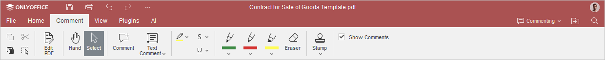
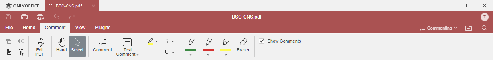

Kartica Komentari
Kartica Komentari u PDF Uređivaču omogućava zajednički rad na PDF dokumentima koristeći komentare i različite alate za označavanje.
Odgovarajući prozor u Online PDF Uređivaču:

Odgovarajući prozor u Desktop PDF Uređivaču:

Pomoću ove kartice možete:
- označiti izabrani tekst,
- dodavati komentare,
- primeniti precrtavanje ili podvlačenje na izabrani tekst,
- označiti PDF koristeći jedan od tri dostupna pera,
- prikazati ili sakriti komentare korišćenjem odgovarajućeg polja za potvrdu.